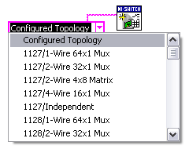
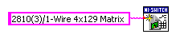
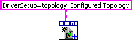
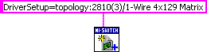

使用您在 MAX 中创建的 NI SwitchBlock 设备的拓扑以及以下部分中描述的 VI 或函数之一，使用拓扑初始化您的 NI SwitchBlock 设备。
有关使用niSwitch Initialize With Topology VI 或niSwitch Initialize With Options VI 使用拓扑初始化 NI SwitchBlock 设备的信息，请参阅以下部分。
|
注意 您必须使用在 MAX 中配置设备时创建的拓扑。 |
您可以使用niSwitch Initialize With Topology VI 通过将常量或字符串连接到拓扑名称参数来指定设备的拓扑。如果将常量连接到拓扑名称参数，请从常量的下拉菜单中选择Configured Topology 。已配置拓扑指定在 MAX 中为设备配置的最后一个拓扑。

如果您想在编程中明确声明设备拓扑，可以将字符串连接到拓扑名称参数，而不是创建常量。下图显示了连接到 niSwitch Initialize With Topology VI 的拓扑字符串，用于三个 NI 2810 卡的组合。

使用以下格式键入您在 MAX 中配置的设备的拓扑字符串。
型号( N )/1-Wire R x C矩阵
其中 MODEL表示设备中组合的 NI SwitchBlock 卡的型号，不包括卡类型的字母。
N表示设备中组合的 NI SwitchBlock 卡的数量。单卡设备的拓扑字符串不包含（N）。
R表示拓扑中的行数。
C表示拓扑中的列数。
您还可以在 MAX 中找到您的设备的拓扑字符串。当您在 MAX 配置树中选择您的设备时，您可以在 MAX 中的项目视图的拓扑列中找到您设备的拓扑字符串。
您可以使用niSwitch Initialize With Options VI 通过设置拓扑配置令牌来指定设备的拓扑，该令牌位于选项字符串参数的驱动程序设置字符串中。您可以将拓扑配置令牌的值设置为已配置拓扑，以指定在 MAX 中为设备配置的最后一个拓扑。

如果您想在您的编程中明确说明设备拓扑，您可以使用设备的拓扑字符串设置拓扑配置令牌的值，格式在本主题的使用 niSwitch 使用拓扑初始化 VI部分进行初始化。下图显示了用于 niSwitch Initialize With Options VI 的拓扑字符串，用于三个 NI 2810 卡的组合。

有关使用niSwitch_InitWithTopology函数和niSwitch_InitWithOptions函数初始化具有拓扑的 NI SwitchBlock 设备的信息，请参阅以下部分。
|
注意 您必须使用在 MAX 中配置设备时创建的拓扑。 |
您可以使用niSwitch_InitWithTopology函数通过设置 topology 参数来指定设备的拓扑。如果使用#define拓扑名称设置拓扑参数，则唯一有效值是NISWITCH_TOPOLOGY_CONFIGURED_TOPOLOGY。
如果您想在您的编程中明确声明设备拓扑，您可以使用设备的拓扑字符串设置拓扑参数，格式在本主题的使用 niSwitch 使用拓扑初始化 VI部分进行初始化。
|
注意 如果您输入一个拓扑字符串，您必须完全按照您在 MAX 中看到的那样输入该字符串。有关在 MAX 中查找拓扑字符串的信息，请参阅本主题的使用 niSwitch Initialize With Topology VI部分进行初始化。 |
您可以使用niSwitch_InitWithOptions函数通过设置拓扑配置令牌来指定设备的拓扑，该令牌位于optionString参数的驱动程序设置字符串中。您可以将拓扑配置令牌的值设置为已配置拓扑，以指定在 MAX 中为设备配置的最后一个拓扑。
如果您想在您的编程中明确说明设备拓扑，您可以使用设备的拓扑字符串设置拓扑配置令牌的值，格式在本主题的使用 niSwitch 使用拓扑初始化 VI部分进行初始化。
|
注意 如果您输入一个拓扑字符串，您必须完全按照您在 MAX 中看到的那样输入该字符串。有关在 MAX 中查找拓扑字符串的信息，请参阅本主题的使用 niSwitch Initialize With Topology VI部分进行初始化。 |
 提交有关此主题的反馈。
提交有关此主题的反馈。 访问ni.com/support以获得技术支持。
访问ni.com/support以获得技术支持。